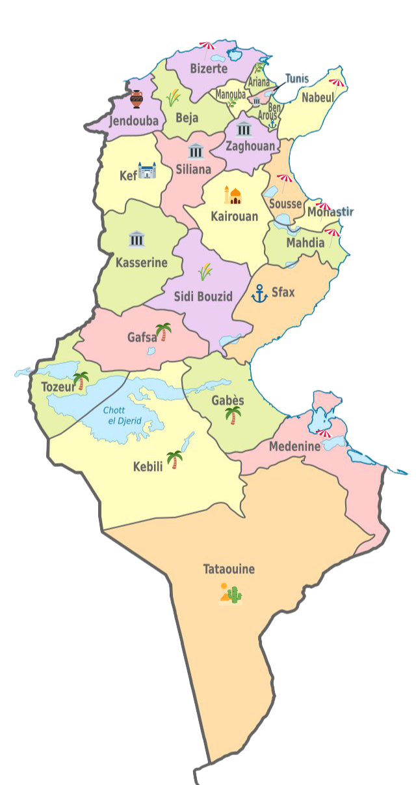

🇹🇳 Explorez la Tunisie
Découvrez les Monuments Célèbres des 24 Gouvernorats
👇
Parcourez la carte interactive et explorez les monuments emblématiques de chaque gouvernorat tunisien. Cliquez sur une région pour découvrir ses trésors architecturaux et culturels !

✨ Cliquez sur les régions pour explorer leurs monuments célèbres
🕌 Un Patrimoine Architectural Exceptionnel
De la médina de Tunis aux ribats du Sahel, des amphithéâtres romains aux mosquées séculaires, chaque gouvernorat tunisien abrite des monuments qui racontent des siècles d'histoire et de culture.